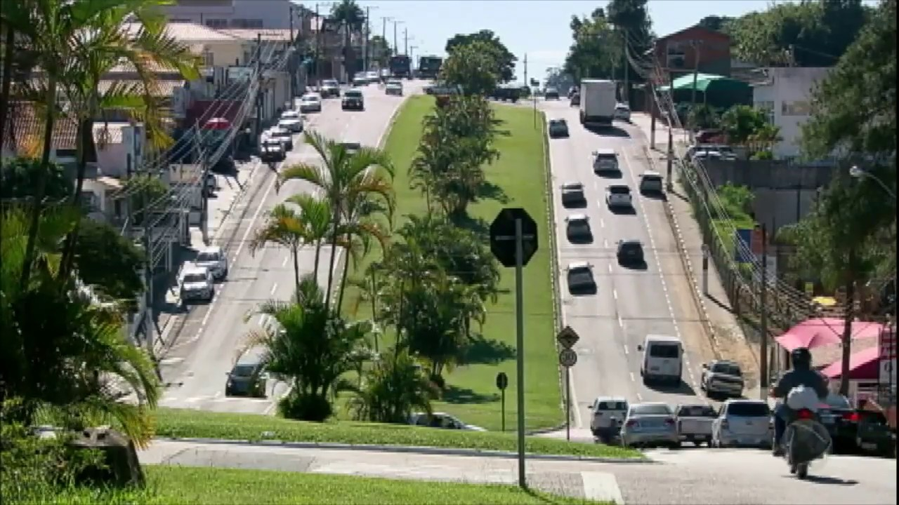

Vinhedo
Município conhecido por abrigar um dos maiores parques de entretenimento do país, o Hopi Hari, Vinhedo tem IDHM de 0,817, índice puxado para cima, principalmente pelos índices educacionais. No ano passado a cidade recebeu o selo de cidade livre do analfabetismo. O município também se destaca pela produção de uva e pelos condomínios de alto padrão.
O evento começou antes mesmo da emancipação do município. Oficialmente, a primeira Festa da Uva aconteceu na Piazza Sant'Anna em 1948. Com o avanço dos tempos aumentou suas proporções. Em 2009, a Festa da Uva realizou a Festa do Vinho, que em 2020 estará em sua 11ª edição e que foi incorporada ao calendário de eventos do município.
